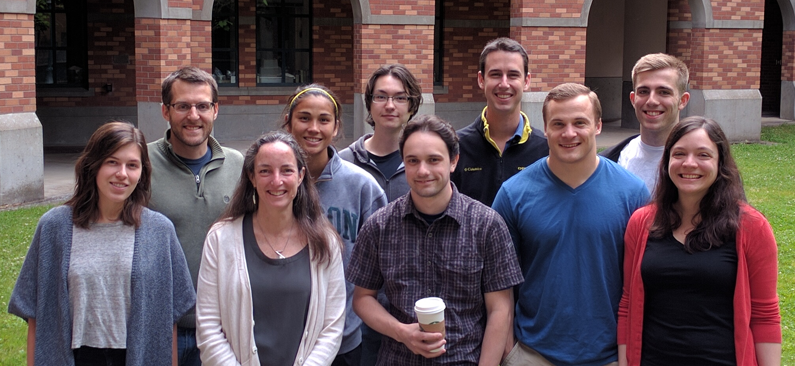
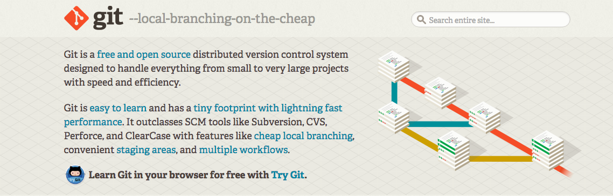
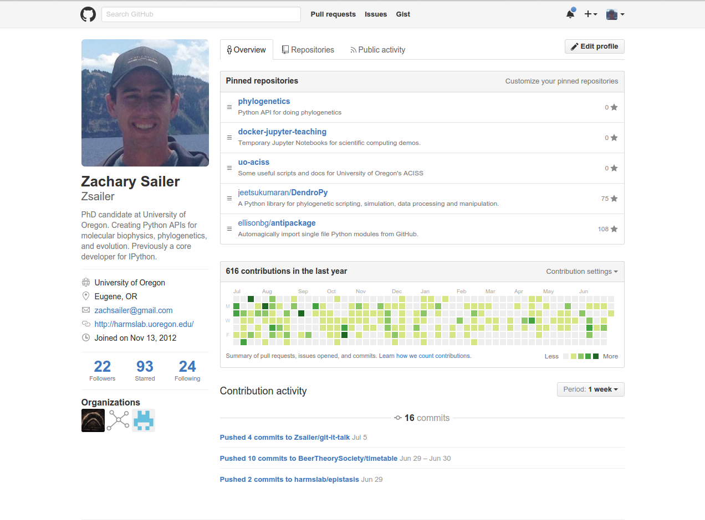
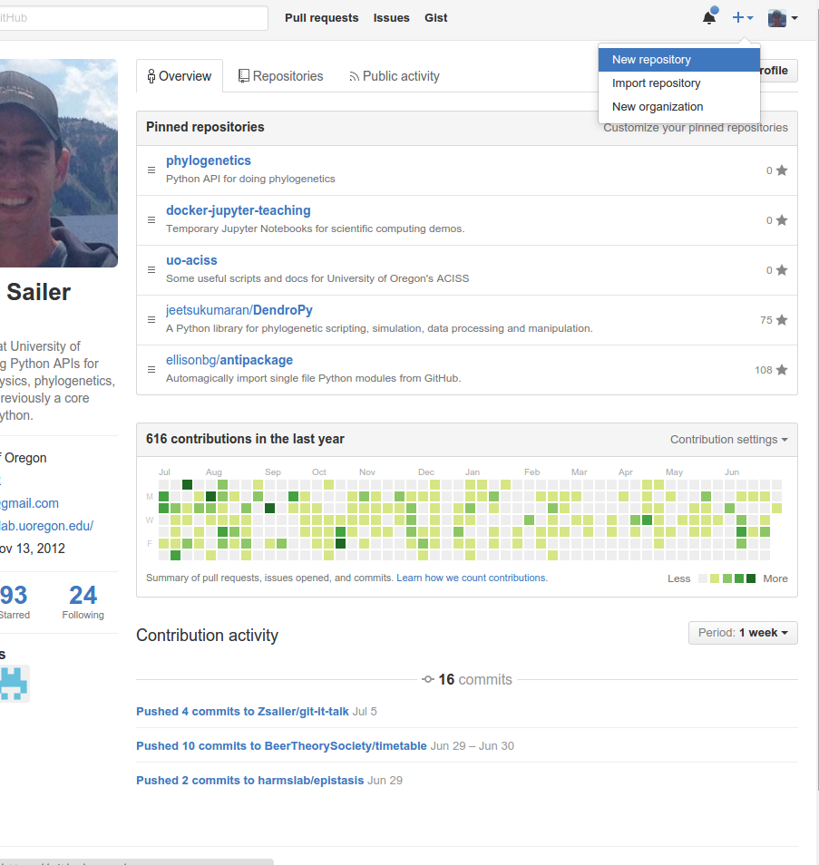
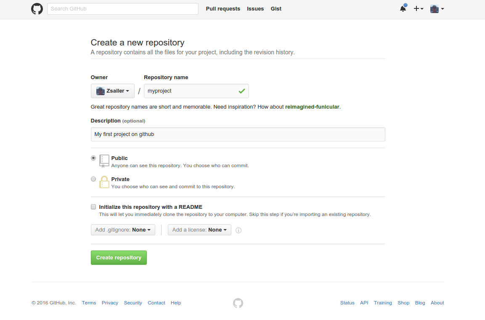
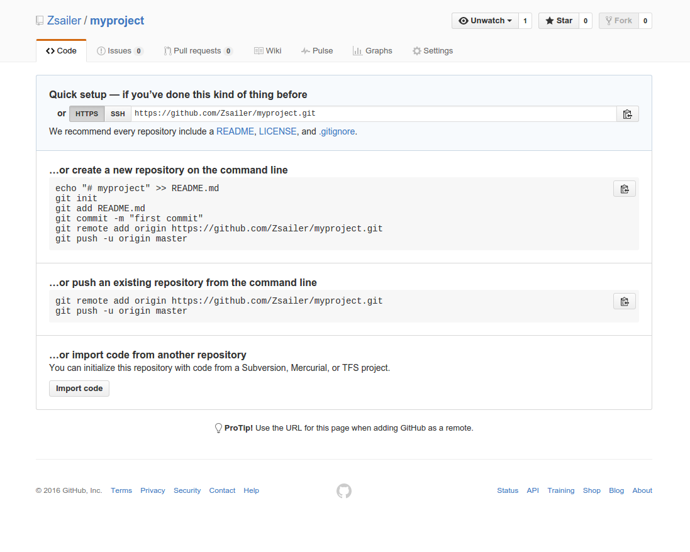
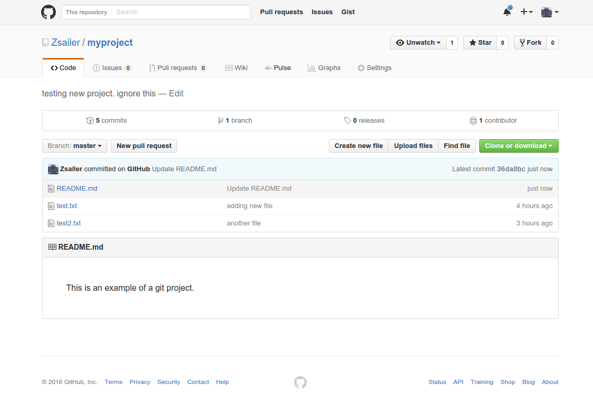
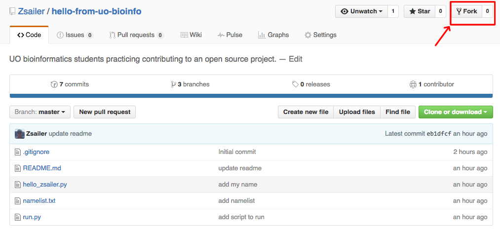
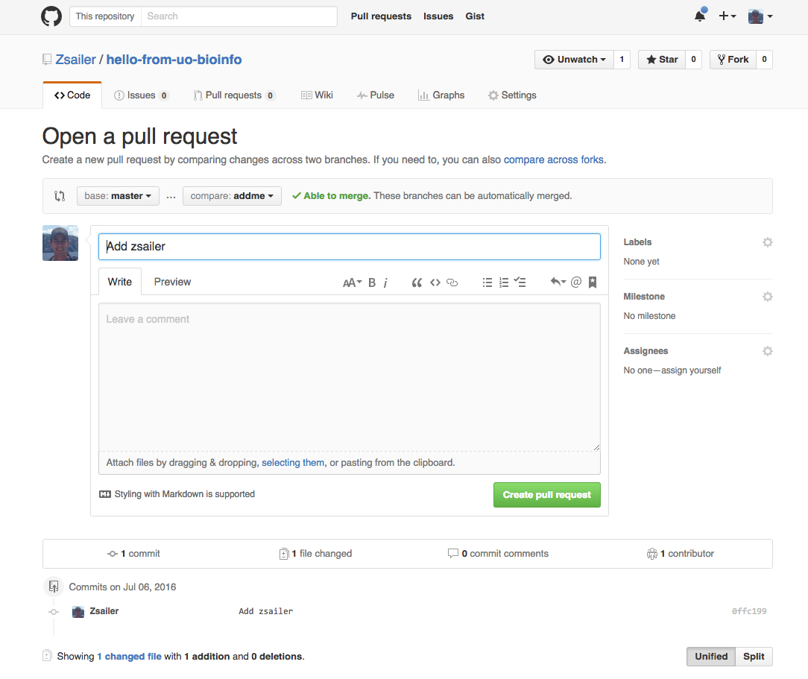
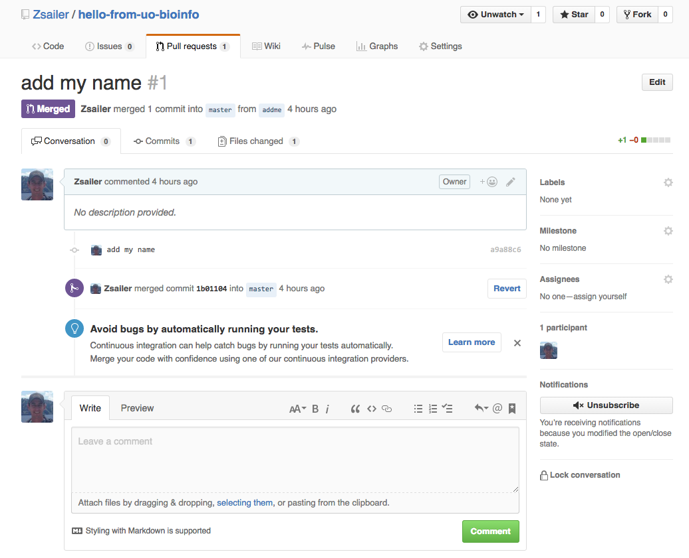

Collaborating on Code
Zach Sailer
About me

What is our goal today?
To successfully work on a single project with many people.
a.k.a. to collaborate
Bioinformatics in the wild . . .
write bad code/analysis,
have it fail you,
headache,
learn and improve.
Bioinformatics in the wild . . . (2)
work with a team,
see other's ideas and mistakes,
learn and improve.
What do we need?
Version Control
Collaborative Platform
Version Control
Collaborative Platform
What is version control?
a system that records changes to a file or set of files over time so that you can recall specific versions later
Meet Git
A relevant XKCD comic

Git Vocabulary
Repository
a project folder tracked by git.Branch
a separate line of the repository with own tracking/history.Commit
save the state of the current line of development for a repository.Merge
combine two lines of development within a repository.
Example of Repository
Think of this as a folder in your filesystem

Example of Repository (2)
Initialize the repo
user@machine:$ mkdir myprojectuser@machine:$ cd myprojectuser@machine:myproject$ git init
Initialized empty Git repository in myproject/.git/
user@machine:myproject$ ls -a
. .. .git
Example of Repository (3)
Add a file to your repo
user@machine:myproject$ echo "Git/Github tutorial from UO Bioinformatics program" > README.mduser@machine:myproject$ git status
# On branch master
#
# Initial commit
#
# Untracked files:
# (use "git add ..." to include in what will be committed)
#
# README.md
nothing added to commit but untracked files present (use "git add" to track)
Example of Repository (4)
Add a file to your repo
user@machine:myproject$ git add README.mduser@machine:myproject$ git status
# On branch master
#
# Initial commit
#
# Changes to be committed:
# (use "git rm --cached ..." to unstage)
#
# new file: README.md
#
Example of Commit
Changes that are tracked.

Example of Commit (2)
user@machine:myproject$ git commit
1 Adding readme to project.
2 # Please enter the commit message for your changes. Lines starting
3 # with '#' will be ignored, and an empty message aborts the commit.
4 # On branch master
5 #
6 # Initial commit
7 #
8 # Changes to be committed:
9 # (use "git rm --cached ..." to unstage)
10 #
11 # new file: README.md
12 #
Boom! Achievement unlocked!
Local git repository

user@machine:myproject$ git log
commit 0000000somecommitnumber00000000000000
Author: Zsailer
Date: Thu Jul 7 10:41:05 2016 -0700
Adding readme to project
local git workflow

Example of Branch
Work on a new feature using a separate line of development

Example of Branch (2)
List current branches.
user@machine:myproject$ git branch
* master
Create a branch named feature
user@machine:myproject$ git branch feature
user@machine:myproject$ git branch
feature
* master
Switch to that branch.
user@machine:myproject$ git checkout feature
Switched to branch 'feature'
Exercise 1: add to the your feature branch
- Create a new file to this branch.
- Add it to your git workspace
- Commit it to your project history.
Hint: Repeat the same steps as we did with the master branch.
Exercise 2: add a new (and different) file to your master branch
checkoutyour master branch.- Create a new file.
addit to your git workspacecommitit to your project history.
Note: the file you added to the feature branch is not in your repository.
Example of a Merge
Merge two lines of development

Example of a Merge
Make sure you are on the master branch
user@machine:myproject$ git branch
feature
* master
Merge feature branch into master branch.
user@machine:myproject$ git merge feature
Merge made by recursive.
test.txt | 1 +
1 files changed, 1 insertions(+), 0 deletions(-)
create mode 100644 test.txt
Make your project public.
Remote Repository
- A mirror of a local repository hosted on a remote server
- Allows for many developers working on one repository.
Let me introduce you to Github
What is Github?
Remote host for Git projects.
A home for software collaboration.
Let's create a Github account
Pick a professional username.
The basics of a Github profile
Create a new repository
Create a new repository (2)
Create a new repository (3)
Point local repo to remote repo
Add the remote repository with nickname "origin".
user@machine:myproject$ git remote add origin https://github.com/Zsailer/myprojectNow let's see what happened.
user@machine:myproject$ git remote -v
origin https://github.com/Zsailer/myproject (fetch)
origin https://github.com/Zsailer/myproject (push)
Git vocabulary (2)
Pull:
download changes from a remote branch and merge with local branch.Fetch:
download/track changes from remote branch, but don't merge with local branch.Push:
upload changes from local branch to remote branchClone:
create a new local repo from an existing remote repo.
Push myproject to Github!
i.e. push your local "master" branch to "origin".
user@machine:myproject$ git push origin master
Counting objects: 11, done.
Delta compression using up to 12 threads.
Compressing objects: 100% (7/7), done.
Writing objects: 100% (11/11), 865 bytes, done.
Total 11 (delta 3), reused 0 (delta 0)
To git@github.com:Zsailer/myproject.git
* [new branch] master -> master
Congratulations!
You now have a project on Github!
Now, for the good stuff!
Finally, we're ready to learn how to
collaborate on (or contribute to) a single project
Some more vocabulary...
Fork :
start a new line of development from a remote repo (like branching).
Pull-Request
merge a forked repo into another remote repo (like merging.)
Let's begin
Fork a project on Github
Go to github.com/Zsailer/hello-from-uo-bioinfo
and click fork.
Clone the fork locally.
user@machine:$ git clone https://github.com/username/hello-from-uo-bioinfo
Cloning into 'hello-from-uo-bioinfo'...
remote: Counting objects: 19, done.
remote: Compressing objects: 100% (16/16), done.
remote: Total 19 (delta 6), reused 9 (delta 1), pack-reused 0
Unpacking objects: 100% (19/19), done.
Checking connectivity... done.
Add a link to the remote repo as well (named it "upstream")
user@machine:$ git remote add upstream https://github.com/Zsailer/hello-from-uo-bioinfo
Branch, add file, and commit.
- Name your branch "addme" and switch to it.
- Add a file named "hello_{github username}.py" (i.e. hello_zsailer.py).
- Commit this change.
Push local branch to Github.
user@machine:$ git push origin addme
Counting objects: 2, done.
Delta compression using up to 8 threads.
Compressing objects: 100% (2/2), done.
Writing objects: 100% (2/2), 228 bytes | 0 bytes/s, done.
Total 2 (delta 1), reused 0 (delta 0)
Submit a pull request
Go to your fork on Github and click pull request.

Submit a pull request (2)
add a description and create pull request
Merged!
Pull changes and update remote branches.
Pull from upstream
user@machine:$ git pull upstream master
and push the updates to all branches.
user@machine:$ git push --all origin
Congrats! You've contributed!
Why not Dropbox?
Merge conflicts!
Handle conflict
Rebase your branch.
Push the updated branch
What other things can you do on Github?
- Host private repositorys, large datasets, and websites for free
- Find open source software for everything.
- Get help and engage with the best coders in the world.
- Form organizations and teams
- Integrate with Slack
- Explore and contribute to major organizations (i.e. Nasa, OpenTreeOfLife, Google, Twitter, FiveThirtyEight, etc.)
- Clone interesting datasets from these organizations.